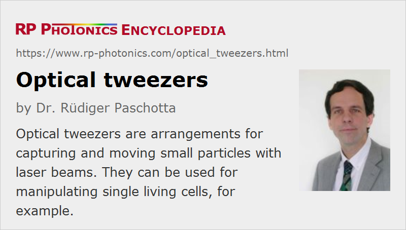

Optical Tweezers
Definition: arrangements for capturing and moving particles with laser beams
German: optische Pinzetten
How to cite the article; suggest additional literature
Author: Dr. Rüdiger Paschotta
Optical tweezers belong to the most common tools for optical manipulation. As early as 1970, it was demonstrated that laser beams can be used to trap and move small particles, e.g. micron-sized latex spheres in water. This is possible due to various kinds of light forces. In the mid-1980s, Arthur Ashkin at AT&T Bell Laboratories greatly pushed and refined this technology, trapping single atoms and later individual viruses and Escherichia coli bacteria with a laser beam, which was tightly focused to a small spot with a microscope objective. It was shown that bacteria can stay alive for long times and even multiply while being trapped by optical tweezers, provided that a suitable (mid-infrared) laser wavelength is chosen (where little light is absorbed).
The forces exerted by optical tweezers e.g. on a bacterium are small in absolute terms – usually not more than a few piconewtons – but still large enough to prevent a bacterium from escaping and to pull it through water at a relatively high speed.
Optical tweezers can also be used as an optical levitation trap, where a small particle is suspended in air, and gravity is compensated by the light forces. Smaller forces are required for particles in a liquid. This has been shown to work even with a supercontinuum source [4], which at the same time makes it possible to carry out spectroscopic investigations of the captured particle.
As the given examples illustrate, the main application of optical tweezers is in microbiology. They can be used to manipulate single cells, e.g. bacteria, blood cells, or sperm (optically assisted in vitro fertilization), and for experiments on single molecules, e.g. DNA.
Note that there are also various other kinds of optical traps, which are applied to atoms or molecules. These partly also involve lasers, apart from electric and magnetic fields.
Nobel Prize in Physics 2018
In October 2018, the Nobel Prize in physics has been awarded with one half to Arthur Ashkin for his work on optical tweezers, and the other half jointly to Gérard Mourou and Donna Strickland for their work on chirped-pulse amplification.
Suppliers
The RP Photonics Buyer's Guide contains 11 suppliers for optical tweezers. Among them:
Questions and Comments from Users
Here you can submit questions and comments. As far as they get accepted by the author, they will appear above this paragraph together with the author’s answer. The author will decide on acceptance based on certain criteria. Essentially, the issue must be of sufficiently broad interest.
Please do not enter personal data here; we would otherwise delete it soon. (See also our privacy declaration.) If you wish to receive personal feedback or consultancy from the author, please contact him e.g. via e-mail.
By submitting the information, you give your consent to the potential publication of your inputs on our website according to our rules. (If you later retract your consent, we will delete those inputs.) As your inputs are first reviewed by the author, they may be published with some delay.
Bibliography
| [1] | A. Ashkin, “Acceleration and trapping of particles by radiation pressure”, Phys. Rev. Lett. 24 (4), 156 (1970), doi:10.1103/PhysRevLett.24.156 |
| [2] | A. Ashkin and J. Dziedzic, “Optical levitation by radiation pressure”, Appl. Phys. Lett. 18, 283 (1971) |
| [3] | A. Ashkin, “Optical trapping and manipulation of neutral particles using lasers”, Proc. Natl. Acad. Sci. USA 94, 4853 (1997) (review article) |
| [4] | P. Li et al., “Manipulation and spectroscopy of a single particle by use of white-light optical tweezers”, Opt. Lett. 30 (2), 156 (2005), doi:10.1364/OL.30.000156 |
| [5] | C. Liberale et al., “Miniaturized all-fibre probe for three-dimensional optical trapping and manipulation”, Nature Photon. 2, 723 (2008), doi:10.1038/nphoton.2007.230 |
| [6] | A. N. Grigorenko et al., “Nanometric optical tweezers based on nanostructured substrates”, Nature Photon. 2, 365 (2008), doi:10.1038/nphoton.2008.78 |
| [7] | A. Samadi and N. S. Reihani, “Optimal beam diameter for optical tweezers”, Opt. Lett. 35 (10), 1494 (2010), doi:10.1364/OL.35.001494 |
| [8] | A. A. R. Neves and C. L. Cesar, “Analytical calculation of optical forces on spherical particles in optical tweezers: tutorial”, J. Opt. Soc. Am. B 36 (6), 1525 (2019), doi:10.1364/JOSAB.36.001525 |
See also: light forces, laser applications
and other articles in the category methods
|  |
If you like this page, please share the link with your friends and colleagues, e.g. via social media:
These sharing buttons are implemented in a privacy-friendly way!